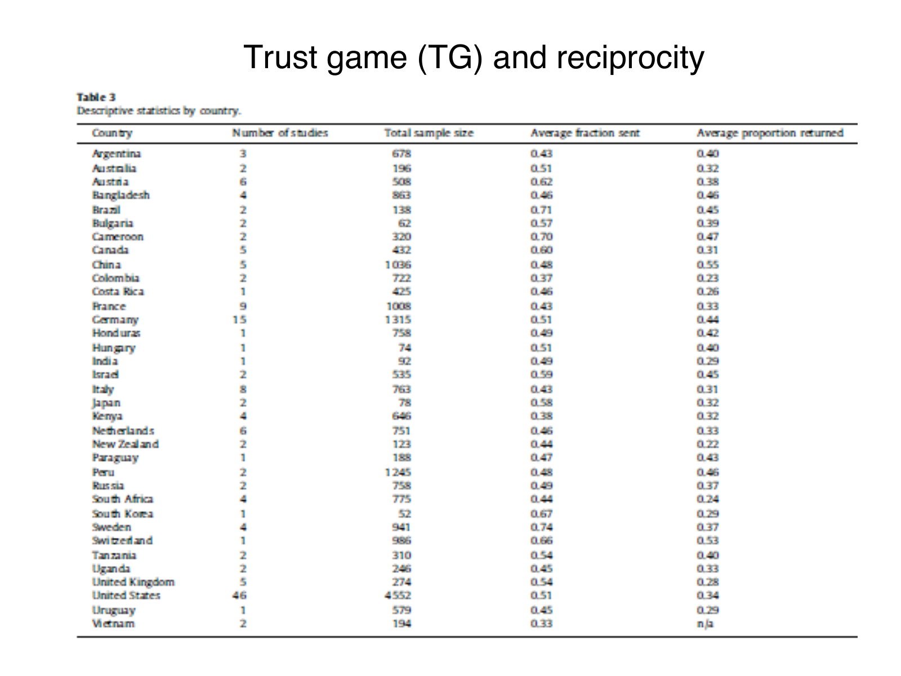

Solve trust-game payoffs and bound empirical interpretations
Explanation, worked examples and practice
Useful first: Solve and interpret ultimatum and dictator allocations
Outcome and conditions
Derive sequential trust-game monetary predictions, calculate transfers/surplus, and interpret the supplied lecture summaries and country table without causal or motive overclaims.
Study conditions, assessment scope and sources
- R1: State sequential roles, feasible \(X\)/\(Y\)/\(Z\) and \(\alpha >1\), derive both final monetary payoffs and cancellation of \(Z\) in total surplus.
- R2: Derive selfish trustee zero after every transfer and anticipating trustor zero; distinguish joint monetary maximum from each player’s utility.
- R3: Compute supplied hypothetical payoffs and break-even; retrieve lecture \(45\%\) sent/\(\sim 33\%\) back with undefined denominator/aggregation, only conditional \(\alpha=3\) one-third interpretation and no product-of-averages inference.
- R4: Distinguish repayment belief/altruism/efficiency and possible reciprocity without uniquely identifying motives; read country columns/descriptive differences, missing Vietnam n/a and absent provenance/design/uncertainty controls.
Finished-note locations:
- The trust game: creating a surplus before deciding its division
- The self-regarding prediction by backward induction
- Observed transfers and what they reveal
- Reading the cross-country table
Use P002/V002/ingest 3 and O005-C1, objective revision 2. Supported instruction can use this block and linked notes. Independent acquisition and delayed attempts are closed note, with blank paper and pen only; no calculator, device, AI, hint or key exposure. Present only the question before the learner responds; keys remain teacher-side. Unknown help/access is unscorable for independence. Hypothetical inputs instantiate supported mechanisms and are not empirical findings.
Prerequisites and checks
Check the prerequisites
- O002: Sequential receiver reasoning supplies the backward-induction method for the trustee/trustor sequence. Repair route: Explanation steps
O005-P1 v1 checks O002 backward reasoning: “A last mover can keep 16 or send away 3, with no later monetary consequence. Which does pure monetary maximization choose, and why solve this step before an earlier mover?” Key: keep 16, since sending leaves 13; the earlier choice anticipates this later action. Pass requires both reasons; partial means an isolated arithmetic slip; fail means imposing an other-regarding motive under the specified pure-money assumption. Repair: O002 Explanation steps 1–3, then O005 Worked example. Qualifying committed O002 evidence for the current compatible tuple can waive this check. This focused diagnostic never substitutes for a full acquisition item.
Entry checks have item version v1, and pass/partial/fail plus repair routes above. Their exact limited outcomes do not certify the upstream objective. A waiver requires actual committed compatible evidence, never familiarity or assumed mastery. If a diagnostic fails, use its named prepared explanation and support before continuing; do not cycle through full upstream independent items just to diagnose.
Motivation, intuition, and definitions
The initial transfer expands the monetary pie under the multiplier rule. The return divides that pie. The investor can create joint surplus while losing privately; a larger total is not a guarantee that both utilities rise. The setup is one interaction without an enforceable return obligation.
Visual support:
- Social Preferences p28 Trust Country Table — inspected qualitative/source support; retrieve the finished note’s adjacent explanation.
Explanation steps
- Trustor starts with \(X\), sends \(Y\) in \([0,X]\); trustee receives \(\alpha Y\) and returns \(Z\) in \([0,\alpha Y]\), with \(\alpha >1\) dimensionless. Trustor payoff \(X-Y+Z\) counts retained cash plus return; trustee payoff \(\alpha Y-Z\) counts receipt less return.
- Add payoffs: \(X-Y+Z+\alpha Y-Z=X+(\alpha -1)Y\). \(Z\) cancels because redistribution changes shares, not total. Relative to initial \(X\), surplus is \((\alpha-1)Y\); \(Y=X\) maximizes this monetary sum. No separate cost is in these rules, and utility/distribution need not improve for every player.
- Start last: a self-regarding trustee maximizes \(\alpha Y-Z\) by \(Z=0\) after every feasible \(Y\). Anticipating this, a self-regarding trustor chooses \(Y=0\) to maximize \(X-Y\). This specifies optimal continuation even off equilibrium; both self-regarding preferences and expectations are required.
- An actual hypothetical trustor’s net gain is \(Z-Y\). Break-even needs \(Z=Y\). If a return proportion is explicitly \(Z/(\alpha Y)\), break-even proportion is \(1/\alpha\). The lecture’s \(\sim 33\%\) back has no defined denominator or aggregation. Only conditionally, with \(\alpha=3\) and exact one-third of multiplied receipt, \(Z=Y\) and gain \(0\); rounded \(.33\) gives \(Z=.99Y\),approximately zero. Do not infer actual individual-average returns by multiplying separately reported averages. The lecture also says about \(45\%\) of endowment sent; empty polls add no results.
- Initial \(Y\) can reflect repayment beliefs, altruism or efficiency concern; \(Z\) may reflect reciprocity but no unique motive follows from one action. Table \(35\) countries separates study count, sample size, fraction sent and proportion returned. US \(46\) studies/\(4552\) observations/\(.51\)/\(.34\); South Korea \(1\)/\(52\)/\(.67\)/\(.29\); Vietnam \(2\)/\(194\)/\(.33\)/n/a. n/a is missing, not zero. No visible table author/year, pooling/sampling/design controls, uncertainty or precise return denominator; it cannot establish causal country effects, national rankings or significance.
Read the full explanation
Reading context
Deliver these complete reused passages before the worked example; earlier concise prompts are checkpoints, not substitutes. Necessary prerequisites use the complete prepared lessons specified above.
Source passage
Origin: reused complete checked passage The trust game: creating a surplus before deciding its division; fingerprint e14303da01e107f5fec8496b95506702aef07ede33359781307e6befec155659. Heading depth alone is adapted.
The trust game: creating a surplus before deciding its division
The trustor, also called the investor, starts with a monetary endowment \(X\). The trustor first chooses a transfer \(Y\), with \(0\leq Y\leq X\). The transfer is multiplied by a factor \(\alpha>1\) before reaching the trustee, also called the agent. The trustee then chooses a back-transfer \(Z\), with \(0\leq Z\leq\alpha Y\). Thus the trustee can return none, some, or all of the multiplied receipt. The interaction occurs once. Here \(\alpha\) denotes the lecture's multiplication factor; it is dimensionless, while \(X,Y,Z\) use the same monetary units. The final monetary payoffs are
The trustor keeps the uninvested amount \(X-Y\) and receives \(Z\); the trustee keeps the multiplied receipt after subtracting the return. The lecture calls \(Y\) trust and \(Z\) trustworthiness. These names describe choices in this experimental game; interpreting the choices as pure measures of one underlying motive requires further care. The lecture presents the setup as a simplified principal–agent problem: an investor creates an opportunity for an agent, whose subsequent action determines whether the investor recovers the investment. Its analogy to commission-taking or stealing is an interpretation of the payoff arrangement, rather than an additional enforced contractual rule. Social Preferences, physical PDF p. 24
Agent unpacking of the lecture's payoff equations: adding the two payoffs gives
The back-transfer \(Z\) cancels because it redistributes existing money between the players. The initial transfer creates a joint monetary surplus \((\alpha-1)Y\) because the experimental rules multiply it. Since \(\alpha>1\), a larger \(Y\) raises their combined monetary payoff, and \(Y=X\) maximizes that sum within this setup. This is the sense in which cooperation can create surplus. A larger monetary sum does not by itself establish that each player's utility rises: distribution and the players' preferences still matter. The calculation uses the game's stated multiplication rule and includes no separate production cost. Social Preferences, physical PDF p. 24; algebraic interpretation
The self-regarding prediction by backward induction
The lecture attributes the first experimental implementation to Berg, Dickhaut and McCabe (1995), using \(X=\$10\) and \(\alpha=3\). It asks for a subgame-perfect equilibrium, an equilibrium in which the prescribed choices remain optimal in every continuation of the game, including continuations that would not occur on the equilibrium path. The classroom poll on PDF p. 26 contains a question, but the supplied file displays no poll results. Social Preferences, physical PDF pp. 25–26
Under the lecture's benchmark, both players maximize their own monetary payoff and the trustor expects the trustee to do so. Agent unpacking: start with the last decision. For any positive \(Y\), the trustee's payoff \(\alpha Y-Z\) decreases one-for-one with \(Z\), so the trustee chooses \(Z=0\). Anticipating this, the trustor expects \(X-Y\), which is maximized at \(Y=0\). With no initial transfer, the trustee's feasible return is also zero. The prediction is therefore no initial transfer and no return, despite the potential joint surplus. The logic requires the self-regarding preferences and corresponding expectations; it is not a prediction for every possible preference model. Social Preferences, physical PDF p. 27
Observed transfers and what they reveal
The lecture reports that most studies find about 45% of the endowment sent and around 33% transferred back, characterizing the latter as around zero return to trust. These are the lecture's approximate summary figures, not results from the empty classroom poll or from one identified sample. PDF p. 27 does not explicitly define the denominator of the 33% figure. Social Preferences, physical PDF p. 27
Conditional agent interpretation: if the return proportion means \(Z/(\alpha Y)\), then returning exactly one third of the trustee's receipt when \(\alpha=3\) gives \(Z=Y\). The trustor ends with \(X-Y+Y=X\), a zero net monetary gain on the investment, while a positive initial transfer still creates a joint surplus. Using the rounded value 0.33 gives \(Z=0.99Y\), approximately the same conclusion. This explains how the lecture's phrase can be consistent with its example, but it does not resolve the unspecified denominator. If 33% instead meant a proportion of the original endowment or of \(Y\), the calculation would differ. Nor can multiplying separately reported averages reconstruct an average individual investment return without the underlying data. Social Preferences, physical PDF p. 27; conditional calculation
The lecture typically attributes back-transfers to reciprocal preferences: the trustee responds to the trustor's prior action. Initial transfers can reflect beliefs that the trustee will return money, altruism toward the trustee, or a concern for increasing the joint payoff. A positive \(Y\) therefore does not uniquely identify a belief in repayment, and a back-transfer alone does not identify reciprocity separately from every other possible motivation. The game's role is to make these motivations visible and distinguish its behavior from the stated selfish benchmark. Social Preferences, physical PDF p. 27
Reading the cross-country table

Full source slide: Table 3, “Descriptive statistics by country,” lists 35 countries, the number of studies, total sample size, average fraction sent, and average proportion returned. The image preserves every country row and the missing return entry for Vietnam. Social Preferences, physical PDF p. 28
The columns separate evidence quantity from transfer behavior. For example, the United States row reports 46 studies, a total sample of 4,552, an average fraction sent of 0.51, and an average proportion returned of 0.34. South Korea reports one study and 52 observations, with 0.67 sent and 0.29 returned. Vietnam reports two studies, 194 observations, 0.33 sent, and “n/a” for returned. The missing entry is not a zero. The table visibly shows variation in reported transfers and very different amounts of evidence across rows. Social Preferences, physical PDF p. 28, table rows and headings
Source limitation: this slide supplies no author/year attribution for Table 3, sampling or pooling procedure, experimental-design controls, uncertainty intervals, or explicit denominator for the return column. The earlier citation to the original trust-game experiment does not establish the provenance of this later table. These descriptive averages therefore support a comparison of the displayed observations; they do not establish a causal effect of country, a representative ranking of national trust, or statistical significance of any difference. No underlying studies or external references were consulted to fill those gaps. Social Preferences, physical PDF p. 28; interpretation limits
Worked example
O005-W1 — Expansion versus division
Item version: v1. Role: worked instruction.
Setup: Agent-created hypothetical: \(X=12, \alpha =3, Y=4, Z=4\). Calculate payoffs, total, surplus and private gain; solve the monetary benchmark and interpret the lecture summary/table.
Worked reasoning and result: 1. The trustor keeps \(12-4\) and receives \(4\), ending with \(12\). The trustee receives \(3\times 4\) and returns \(4\), ending with \(8\). 2. Total is \(20=X+2Y\); surplus is \(8\); trustor net gain \(Z-Y\) is zero. 3. A self-regarding trustee returns \(Z=0\) after every \(Y\); anticipating this, the self-regarding trustor chooses \(Y=0\). 4. \(Y=X\) maximizes the monetary sum, without ensuring both utilities rise. 5. The lecture reports about \(45\%\) sent and about \(33\%\) returned, with the return denominator/aggregation undefined. Only if the proportion is \(Z/(3Y)=1/3\) does \(Z=Y\) imply zero gain; \(0.33\) gives \(0.99Y\) and approximately zero gain. Products of separate empirical averages cannot reconstruct individual mean returns. 6. Sends may reflect repayment beliefs, altruism or efficiency; returns may reflect reciprocity without identifying one motive. The US row is \(46\) studies, \(4,552\) observations, \(.51\) sent, \(.34\) returned; South Korea is \(1\), \(52\), \(.67\), \(.29\); Vietnam is \(2\), \(194\), \(.33\), n/a. Missing is not zero. These descriptive rows lack author/year, sampling/pooling/design controls, uncertainty and an explicit return denominator, so they establish no causal country effect, representative national ranking or statistical significance.
Checks and interpretation: Verify labels, active conditions, dimensions/signs where applicable and every source limitation before inferring a choice. This example is exposed instruction and cannot establish independence.
Practice with fading assistance
Write your reasoning, then reveal the complete key to check each step.
A local draft for your own study.
Reveal explanation
Key: Retained cash is \(12\) and multiplied receipt is \(18\). Trustor payoff is \(14\); trustee payoff is \(16\); total is \(30\); surplus is \(12\); gain is \(-4\). General payoffs are \(X-Y+Z\) and \(\alpha Y-Z\), totaling \(X+(\alpha -1)Y\). Break-even return is \(Z=Y=6\); the proportion is \(1/3\) only when its denominator is the multiplied receipt. The selfish trustee returns zero after every feasible \(Y\), so the anticipating trustor sends zero. \(Y=X\) maximizes total money, not necessarily each utility. The lecture percentages are approximately \(45\%\) sent/\(33\%\) returned, with missing return denominator and aggregation. Exact one-third of the \(\alpha =3\) receipt implies zero net gain; \(.33\) gives approximately zero; multiplying separate empirical averages is unjustified. Initial transfers may reflect repayment beliefs, altruism or efficiency; returns may reflect reciprocity, without unique motive identification. US \(46\)/\(4552\)/\(.51\)/\(.34\), Korea \(1\)/\(52\)/\(.67\)/\(.29\) and Vietnam \(2\)/\(194\)/\(.33\)/n/a separate study/sample quantities from transfer means. n/a is missing. Absent table author/year, sampling/pooling/design, uncertainty and return denominator prevent causal country rankings or significance claims. General rules: \(X>0, \alpha >1, 0\le Y\le X, 0\le Z\le \alpha Y\); \(\alpha\) is dimensionless, and \(X\)/\(Y\)/\(Z\) share monetary units. The trustor/investor chooses first, then the observing trustee/agent chooses the return; there is one interaction.
Support and rubric: Begin by letting the learner complete the specified steps using blank paper. Linked notes and up to two prepared hints are allowed here. Pass requires the essential component list with correct reasoning; partial means an incomplete component or isolated arithmetic slip, prompting the named repair; fail means a critical conceptual error. A correct supported answer permits fading help, never a claim of independent acquisition. After two ineffective hints show the needed step or pause.
A local draft for your own study.
Reveal explanation
Key: General constraints are \(X>0, \alpha >1, 0\le Y\le X\) and \(0\le Z\le \alpha Y\); \(\alpha\) is dimensionless and \(X\)/\(Y\)/\(Z\) use the same monetary units. The trustor/investor chooses \(Y\) first in \([0,20]\); the trustee/agent observes it and chooses \(Z\) in \([0,24]\). The interaction occurs once. Payoffs are \(X-Y+Z=18\) and \(\alpha Y-Z=18\); total is \(X+(\alpha -1)Y=36\); surplus is \((\alpha -1)Y=16\); private gain is \(Z-Y=-2\). Break-even needs \(Z=Y=8\); if the denominator is \(\alpha Y\), the break-even fraction is \(1/3\). The trustee’s own payoff falls with \(Z\), so \(Z=0\) after every \(Y\); a trustor expecting that continuation maximizes \(X-Y\) at \(Y=0\). This requires both self-regarding preferences and corresponding expectations. \(Y=X\) maximizes total money under the stated cost-free multiplier rules, without guaranteeing either utility rises. The lecture reports approximately \(45\%\) of the endowment sent and \(33\%\) returned, with the return denominator and aggregation undefined. Conditional on \(Z/(3Y)=1/3, Z=Y\) and gain is zero; \(.33\) instead gives \(Z=.99Y\) and \(\text{gain}=-.01Y\), approximately zero. These calculations do not establish the actual denominator or reconstruct individual mean returns from separate averages. Repayment beliefs, altruism or efficiency can motivate \(Y\); reciprocity may motivate \(Z\) but neither action identifies one motive. US: \(46\) studies, \(4,552\) observations, \(.51\) sent/\(.34\) returned; South Korea: \(1\) study, \(52\) observations, \(.67\)/\(.29\); Vietnam: \(2\) studies, \(194\) observations, \(.33\)/n/a. Counts describe evidence quantity, transfer means describe choices, and n/a is missing rather than zero. Author/year, sampling/pooling/design controls, uncertainty and the return denominator are absent; the displayed averages can be ordered descriptively (Korea’s sent average exceeds the US value; the US return average exceeds Korea’s), but they do not establish causal country effects, representative rankings of national trust traits or statistical significance.
Item rubric: All listed required components must be supplied, with correct reasoning and limits; apply the component decision rules in Rubric and independence. Conceptually equivalent explanations and exact fractions/consistent decimals are acceptable. No assistance, notes, calculator, device, AI or key access for an independent/delayed attempt; blank paper and pen only. C1 is a supported repair after scoring the original response and does not count toward acquisition or delayed retention.
A local draft for your own study.
Reveal explanation
Key: General constraints are \(X>0, \alpha >1, 0\le Y\le X\) and \(0\le Z\le \alpha Y\); \(\alpha\) is dimensionless and \(X\)/\(Y\)/\(Z\) use the same monetary units. The trustor/investor chooses \(Y\) first in \([0,30]\); the trustee/agent observes it and chooses \(Z\) in \([0,24]\). The interaction occurs once. Payoffs are \(X-Y+Z=27\) and \(\alpha Y-Z=15\); total is \(X+(\alpha -1)Y=42\); surplus is \((\alpha -1)Y=12\); private gain is \(Z-Y=-3\). Break-even needs \(Z=Y=12\); if the denominator is \(\alpha Y\), the break-even fraction is \(1/2\). The trustee’s own payoff falls with \(Z\), so \(Z=0\) after every \(Y\); a trustor expecting that continuation maximizes \(X-Y\) at \(Y=0\). This requires both self-regarding preferences and corresponding expectations. \(Y=X\) maximizes total money under the stated cost-free multiplier rules, without guaranteeing either utility rises. The lecture reports approximately \(45\%\) of the endowment sent and \(33\%\) returned, with the return denominator and aggregation undefined. Conditional on \(Z/(3Y)=1/3, Z=Y\) and gain is zero; \(.33\) instead gives \(Z=.99Y\) and \(\text{gain}=-.01Y\), approximately zero. These calculations do not establish the actual denominator or reconstruct individual mean returns from separate averages. Repayment beliefs, altruism or efficiency can motivate \(Y\); reciprocity may motivate \(Z\) but neither action identifies one motive. US: \(46\) studies, \(4,552\) observations, \(.51\) sent/\(.34\) returned; South Korea: \(1\) study, \(52\) observations, \(.67\)/\(.29\); Vietnam: \(2\) studies, \(194\) observations, \(.33\)/n/a. Counts describe evidence quantity, transfer means describe choices, and n/a is missing rather than zero. Author/year, sampling/pooling/design controls, uncertainty and the return denominator are absent; the displayed averages can be ordered descriptively (Korea’s sent average exceeds the US value; the US return average exceeds Korea’s), but they do not establish causal country effects, representative rankings of national trust traits or statistical significance.
Item rubric: All listed required components must be supplied, with correct reasoning and limits; apply the component decision rules in Rubric and independence. Conceptually equivalent explanations and exact fractions/consistent decimals are acceptable. No assistance, notes, calculator, device, AI or key access for an independent/delayed attempt; blank paper and pen only. C1 is a supported repair after scoring the original response and does not count toward acquisition or delayed retention.
Rubric and independence
Self-assessment criteria and tutor checks
- R1: State sequential roles, feasible \(X\)/\(Y\)/\(Z\) and \(\alpha >1\), derive both final monetary payoffs and cancellation of \(Z\) in total surplus.
- R2: Derive selfish trustee zero after every transfer and anticipating trustor zero; distinguish joint monetary maximum from each player’s utility.
- R3: Compute supplied hypothetical payoffs and break-even; retrieve lecture \(45\%\) sent/\(\sim 33\%\) back with undefined denominator/aggregation, only conditional \(\alpha=3\) one-third interpretation and no product-of-averages inference.
- R4: Distinguish repayment belief/altruism/efficiency and possible reciprocity without uniquely identifying motives; read country columns/descriptive differences, missing Vietnam n/a and absent provenance/design/uncertainty controls.
Every I1, I2, D1, D2 and C1 question/key explicitly addresses all required components above. The sole acquisition route is two separate, distinct, fresh unassisted passes on I1 and I2 under the current criterion and compatible tuple. Worked/support/diagnostic/correction items and delayed items are not acquisition substitutes. No shorter question silently fills a missing component. The fixed practice inputs differ across W1/S1/I1/I2/D1/D2/C1; learning constants from the notes remain common where retrieval of those exact facts is the outcome.
Pass: all essential components, necessary reasoning, assumptions and interpretation limits are present, with accurate outputs. Accept equivalent wording, correct alternative algebra and exact fractions or consistent rounding that preserves inequalities/ties. Partial: a missing component or isolated arithmetic/transcription slip with valid conceptual setup; score before explaining the repair and do not count this attempt as a pass. Fail: wrong regime/role/sign, invalid incentive logic, replacing utility with monetary sum, treating hypothetical or descriptive data as identified results, or dropping a stated condition that changes the conclusion. For the orientation objective, replacing a printed restriction with an invented rule is a critical error. Unscorable: ambiguous prompt interpretation outside the key, unknown assistance/access/exposure, or unavailable source tuple. No numeric point scale or mastery result is fabricated.
An independent check is fresh only if neither its question nor key has already been exposed, including during earlier diagnostics or feedback. Teach records actual help/access conditions. Correct repetition of an exposed task cannot establish fresh independence. I1 and I2 are reserved for acquisition; D1/D2 are reserved for delayed retrieval.
Misconceptions and correction
Signs: \(Z\) counted twice in total, multiplier-only arithmetic labelled empirical \(33\%\) conclusion, n/a treated zero, country effect asserted. Correction: cancel the return; state its denominator as an explicit hypothetical condition; describe table columns without causal inference. Hint1: where did returned cash go? Hint2: what denominator is actually supplied? C1 repair only.
A sign is a tentative hypothesis about the error until the learner’s reasoning supports it. Score the initial response before giving the corrective explanation or either hint. At most two ineffective hints, then show the specific prepared step or pause. After two unsuccessful full independent attempts, stop quizzing and use support/prerequisite repair; request new full variants from plan if needed.
O005-C1 — fresh correction only
Item version: v1. Role: correction_repair. Relation: parallel_variant. Required components: R1, R2, R3, R4.
Question: Agent-created hypothetical: \(X=18, \alpha =3, Y=7, Z=4\), in common monetary units. State the one-shot sequence, role names, general feasible constraints and units, and numeric transfer bounds; derive general payoff, total and surplus formulas and calculate both payoffs, surplus, net investment gain and break-even return/proportion. Solve the pure-money continuation benchmark with its expectation assumption and explain why a maximum monetary sum need not improve both utilities. Retrieve the lecture’s approximate transfer percentages, show the conditional \(\alpha =3\) one-third/rounded .33 arithmetic and explain denominator/aggregation limits. Distinguish possible motives and interpret the supplied US/Korea/Vietnam rows, table columns, missing entry and absent methods. Supplied source-table excerpt (Studies / Sample / Average fraction sent / Average proportion returned): US 46 / 4552 / .51 / .34; South Korea 1 / 52 / .67 / .29; Vietnam 2 / 194 / .33 / n/a. Read the displayed averages descriptively and explain which population-trait, causal or significance claims these data do not establish; no memorization of study/sample counts is required.
Key: General constraints are \(X>0, \alpha >1, 0\le Y\le X\) and \(0\le Z\le \alpha Y\); \(\alpha\) is dimensionless and \(X\)/\(Y\)/\(Z\) use the same monetary units. The trustor/investor chooses \(Y\) first in \([0,18]\); the trustee/agent observes it and chooses \(Z\) in \([0,21]\). The interaction occurs once. Payoffs are \(X-Y+Z=15\) and \(\alpha Y-Z=17\); total is \(X+(\alpha -1)Y=32\); surplus is \((\alpha -1)Y=14\); private gain is \(Z-Y=-3\). Break-even needs \(Z=Y=7\); if the denominator is \(\alpha Y\), the break-even fraction is \(1/3\). The trustee’s own payoff falls with \(Z\), so \(Z=0\) after every \(Y\); a trustor expecting that continuation maximizes \(X-Y\) at \(Y=0\). This requires both self-regarding preferences and corresponding expectations. \(Y=X\) maximizes total money under the stated cost-free multiplier rules, without guaranteeing either utility rises. The lecture reports approximately \(45\%\) of the endowment sent and \(33\%\) returned, with the return denominator and aggregation undefined. Conditional on \(Z/(3Y)=1/3, Z=Y\) and gain is zero; \(.33\) instead gives \(Z=.99Y\) and \(\text{gain}=-.01Y\), approximately zero. These calculations do not establish the actual denominator or reconstruct individual mean returns from separate averages. Repayment beliefs, altruism or efficiency can motivate \(Y\); reciprocity may motivate \(Z\) but neither action identifies one motive. US: \(46\) studies, \(4,552\) observations, \(.51\) sent/\(.34\) returned; South Korea: \(1\) study, \(52\) observations, \(.67\)/\(.29\); Vietnam: \(2\) studies, \(194\) observations, \(.33\)/n/a. Counts describe evidence quantity, transfer means describe choices, and n/a is missing rather than zero. Author/year, sampling/pooling/design controls, uncertainty and the return denominator are absent; the displayed averages can be ordered descriptively (Korea’s sent average exceeds the US value; the US return average exceeds Korea’s), but they do not establish causal country effects, representative rankings of national trust traits or statistical significance.
Item rubric: All listed required components must be supplied, with correct reasoning and limits; apply the component decision rules in Rubric and independence. Conceptually equivalent explanations and exact fractions/consistent decimals are acceptable. No assistance, notes, calculator, device, AI or key access for an independent/delayed attempt; blank paper and pen only. C1 is a supported repair after scoring the original response and does not count toward acquisition or delayed retention.
Immediate and delayed checks
I1 and I2 are prepared above for immediate acquisition. Present each question without its key. Delayed checks below must occur at least 24 actual hours after both qualifying acquisition and the most recent relevant teaching/feedback/known solution exposure: measure from the later of those anchors. They occur before recap and without help. A next calendar day alone does not establish 24 hours. Record known intervening exposure; unknown timing/exposure does not certify delayed retention. This interval is a practical validity guard, not a personalized optimum. A delayed pass requires all current essential components. D1 and D2 are alternatives for separate fresh delayed attempts; use the first unused one, never both merely to fill acquisition. Passing a number-changed parallel variant supports bounded retrieval and application, not broad transfer or every semester topic.
A local draft for your own study.
Reveal explanation
Key: General constraints are \(X>0, \alpha >1, 0\le Y\le X\) and \(0\le Z\le \alpha Y\); \(\alpha\) is dimensionless and \(X\)/\(Y\)/\(Z\) use the same monetary units. The trustor/investor chooses \(Y\) first in \([0,24]\); the trustee/agent observes it and chooses \(Z\) in \([0,27]\). The interaction occurs once. Payoffs are \(X-Y+Z=20\) and \(\alpha Y-Z=22\); total is \(X+(\alpha -1)Y=42\); surplus is \((\alpha -1)Y=18\); private gain is \(Z-Y=-4\). Break-even needs \(Z=Y=9\); if the denominator is \(\alpha Y\), the break-even fraction is \(1/3\). The trustee’s own payoff falls with \(Z\), so \(Z=0\) after every \(Y\); a trustor expecting that continuation maximizes \(X-Y\) at \(Y=0\). This requires both self-regarding preferences and corresponding expectations. \(Y=X\) maximizes total money under the stated cost-free multiplier rules, without guaranteeing either utility rises. The lecture reports approximately \(45\%\) of the endowment sent and \(33\%\) returned, with the return denominator and aggregation undefined. Conditional on \(Z/(3Y)=1/3, Z=Y\) and gain is zero; \(.33\) instead gives \(Z=.99Y\) and \(\text{gain}=-.01Y\), approximately zero. These calculations do not establish the actual denominator or reconstruct individual mean returns from separate averages. Repayment beliefs, altruism or efficiency can motivate \(Y\); reciprocity may motivate \(Z\) but neither action identifies one motive. US: \(46\) studies, \(4,552\) observations, \(.51\) sent/\(.34\) returned; South Korea: \(1\) study, \(52\) observations, \(.67\)/\(.29\); Vietnam: \(2\) studies, \(194\) observations, \(.33\)/n/a. Counts describe evidence quantity, transfer means describe choices, and n/a is missing rather than zero. Author/year, sampling/pooling/design controls, uncertainty and the return denominator are absent; the displayed averages can be ordered descriptively (Korea’s sent average exceeds the US value; the US return average exceeds Korea’s), but they do not establish causal country effects, representative rankings of national trust traits or statistical significance.
Item rubric: All listed required components must be supplied, with correct reasoning and limits; apply the component decision rules in Rubric and independence. Conceptually equivalent explanations and exact fractions/consistent decimals are acceptable. No assistance, notes, calculator, device, AI or key access for an independent/delayed attempt; blank paper and pen only. C1 is a supported repair after scoring the original response and does not count toward acquisition or delayed retention.
A local draft for your own study.
Reveal explanation
Key: General constraints are \(X>0, \alpha >1, 0\le Y\le X\) and \(0\le Z\le \alpha Y\); \(\alpha\) is dimensionless and \(X\)/\(Y\)/\(Z\) use the same monetary units. The trustor/investor chooses \(Y\) first in \([0,16]\); the trustee/agent observes it and chooses \(Z\) in \([0,20]\). The interaction occurs once. Payoffs are \(X-Y+Z=18\) and \(\alpha Y-Z=13\); total is \(X+(\alpha -1)Y=31\); surplus is \((\alpha -1)Y=15\); private gain is \(Z-Y=2\). Break-even needs \(Z=Y=5\); if the denominator is \(\alpha Y\), the break-even fraction is \(1/4\). The trustee’s own payoff falls with \(Z\), so \(Z=0\) after every \(Y\); a trustor expecting that continuation maximizes \(X-Y\) at \(Y=0\). This requires both self-regarding preferences and corresponding expectations. \(Y=X\) maximizes total money under the stated cost-free multiplier rules, without guaranteeing either utility rises. The lecture reports approximately \(45\%\) of the endowment sent and \(33\%\) returned, with the return denominator and aggregation undefined. Conditional on \(Z/(3Y)=1/3, Z=Y\) and gain is zero; \(.33\) instead gives \(Z=.99Y\) and \(\text{gain}=-.01Y\), approximately zero. These calculations do not establish the actual denominator or reconstruct individual mean returns from separate averages. Repayment beliefs, altruism or efficiency can motivate \(Y\); reciprocity may motivate \(Z\) but neither action identifies one motive. US: \(46\) studies, \(4,552\) observations, \(.51\) sent/\(.34\) returned; South Korea: \(1\) study, \(52\) observations, \(.67\)/\(.29\); Vietnam: \(2\) studies, \(194\) observations, \(.33\)/n/a. Counts describe evidence quantity, transfer means describe choices, and n/a is missing rather than zero. Author/year, sampling/pooling/design controls, uncertainty and the return denominator are absent; the displayed averages can be ordered descriptively (Korea’s sent average exceeds the US value; the US return average exceeds Korea’s), but they do not establish causal country effects, representative rankings of national trust traits or statistical significance.
Item rubric: All listed required components must be supplied, with correct reasoning and limits; apply the component decision rules in Rubric and independence. Conceptually equivalent explanations and exact fractions/consistent decimals are acceptable. No assistance, notes, calculator, device, AI or key access for an independent/delayed attempt; blank paper and pen only. C1 is a supported repair after scoring the original response and does not count toward acquisition or delayed retention.
Content provenance and generation boundaries
Sources and scope
Complete checked-note passages above are reused with only heading-depth and explicit mathematical typography adaptation; exact origin/fingerprint and asset dependencies are in source_manifest.md. All earlier plan-created exercises/full keys and named evidence routes remain intact. Hypothetical arithmetic instantiates the included definitions and does not introduce empirical results or new academic claims. Only named prepared full-capability forms and their existing permitted pairs can certify acquisition/delayed evidence. Extra checked explanation/practice cannot replace a named full form or reassessment gate. Equivalent verified methods may meet the unchanged pre-answer criterion; ambiguous criteria or an exhausted fresh bank return to plan. The current objective revision is 2; item/criterion versions remain as explicitly stated above.